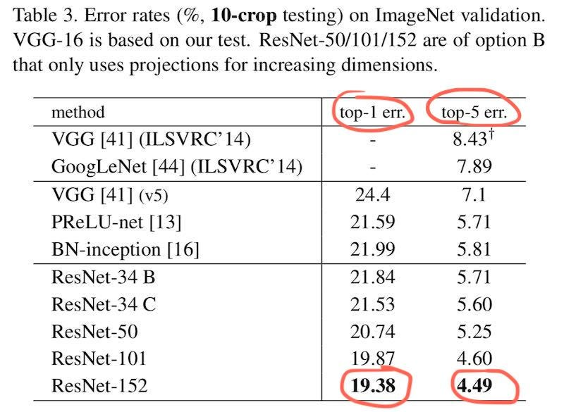
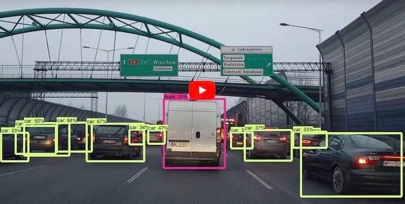
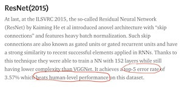
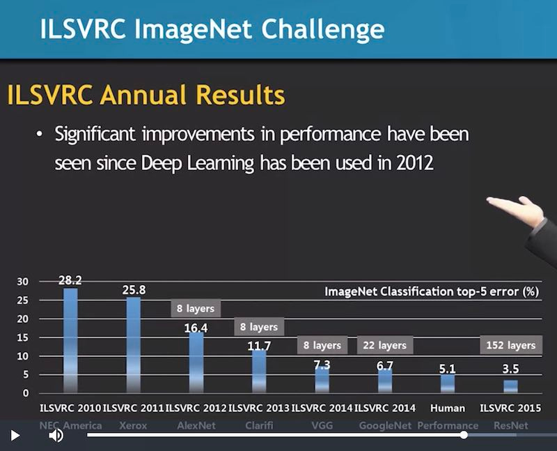

What is this? It is a car. You will say so immediately without hesitance. But if you ask this question to a computer vision model, even the most advanced ones, they may answer like this:
Is it an apple?
No? Then I guess it is a coffee mug.
No? Well, a horse?
No? It looks like a mobile phone.
Okay, final guess, it is a car!
And this is considered to have passed the top-5 accuracy test. Top-5 basically means that given five chances and you get the right answer in one of them, then this counts as a correct image recognition. Given hundreds of pictures, then they calculate your error rate.
What is the top-5 error rate of the most advanced computer vision model? One of those models, ResNet, has a top-5 error rate of 4.49% (thus an accuracy of 95.51%). They had a human do the same thing, and his top-5 error rate was 5.1%, thus they say that ResNet has super human-level vision. This is basically how the term came about.
But the problem is, do we get five chances to recognize an object? What if there is only one chance? This is called top-1 accuracy. Using top-1 accuracy, ResNet's error rate was 19.38%.

They never compared computer vision models with human performance using top-1 accuracy. Only with top-5 can computers appear to have super human-level vision. If there is only one chance to recognize an object, then computers will behave much worse.
What is wrong with top-5 then? Because top-5 blurs the difference between good and bad recognizers. Let me make an analogy. If you are a professor making final exam rules, for each question you give the students five chances to get the correct answer. What will happen? You will have trouble telling good student from bad ones. You are simply giving the bad students chances to appear much better than they really are.
Good students need just one chance to arrive at the correct answer. If you give them five chances, they will only use one of them. Their top-5 accuracy is the same as their top-1 accuracy. On the other hand, bad students can't get the correct answer the first try, so they may utilize all five chances. Thus their top-5 accuracy is much higher than their top-1 accuracy.
Should you give everybody five chances? No. The real world is not a research competition. It is a cruel game of life. Even the most mundane situations give you only one chance to recognize an object, and that one chance often means life or death. Eating, walking across the street, driving... You are often not allowed to make even one mistake in object recognition.
Can you afford to recognize the thing in front you as "pancake / poop / knife / apple / cockroach" before deciding whether to eat it?
Can you afford to recognize the thing in front of your car as "notebook / truck / cell phone / whiteboard / bucket"?

So you see the problem. Very often we only get one chance to recognize an object. Having five chances usually means that you don't know anything at all.
You can find top-5's official definition on ILSVRC's website. ILSVRC stands for ImageNet Large Scale Visual Recognition Challenge, the currently most recognized competition in the computer vision field. All recent accuracy numbers are coming from their data set and competition rules.
The first deep learning model claiming to achieve human-level performance was ResNet, developed by Microsoft Research. Soon afterwards, a few other "superhuman" vision models were developed, all based on similar methodology and the same measuring standard, top-5.

Very few people would question how the error rates were measured. They never ask what "top-5" means. Often they were not even told about top-5 at all. Most outsiders took for granted that there was only one chance to get the answer (top-1). With top-5, computer vision appears to have dramatic improvements over recent years. Many people even believe they can be used to drive cars.

Even if we use top-5, we haven't asked how "human top-5 error rate" (5.1%) was measured. Who were the human test subjects? What are their backgrounds? Are they financially related to the research group? Are they qualified to represent humans in general? How many of them were tested, and how was the results measured and calculated? You would expect detailed reports of this aspect in a medical research paper, but there were never such reports in computer vision papers. "Human error rate" is always said to be 5.1%. Nobody knows how the number came about. Actually, there was only one person who took the test, and he was a PhD student of the same research group. His top-5 error rate was 5.1%. Then this number is used everywhere to represent "human error rate". Nobody else rerun the test again.
What about the representing power of the test data? All the images in ImageNet are clear photos taken in good lighting conditions without any occlusion. How will the machine behave under low-light, reflective, blurry or blocking conditions? Unknown. Does image classification (telling the names of objects) represent all of "human vision"? Is it enough to drive a car if you just know the names of everything? ...
Too many unanswered questions. How far are machines from achieving true human-level computer vision? I'd say very, very far. We haven't even started. If you observe your own vision system carefully, you may realize that human vision is fundamentally different from neural nets and much superior.
Some people think there can be fully autonomous cars in a few years because we have "super-human level computer vision". As we see, this hope is unrealistic because the "super-human level" is based on top-5 accuracy. Computer vision is good enough for general non-critical use (such as image search, face recognition etc), but it can't be relied upon for something like autonomous driving.